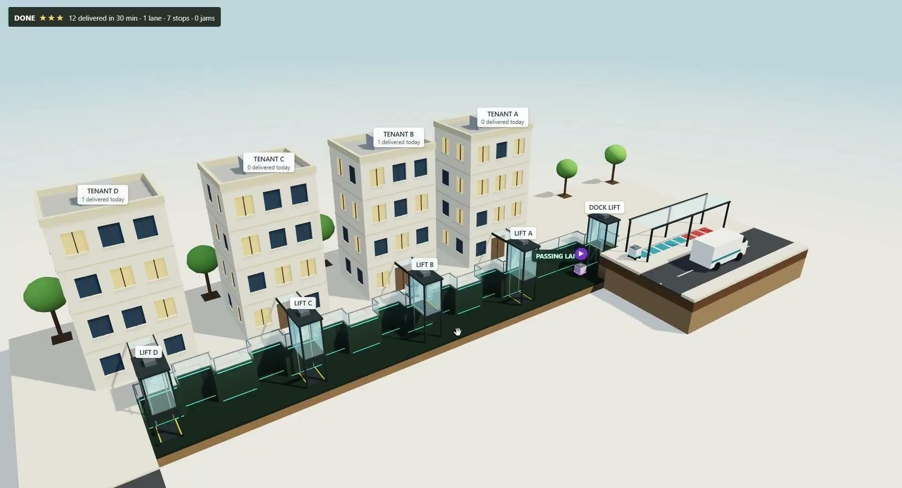
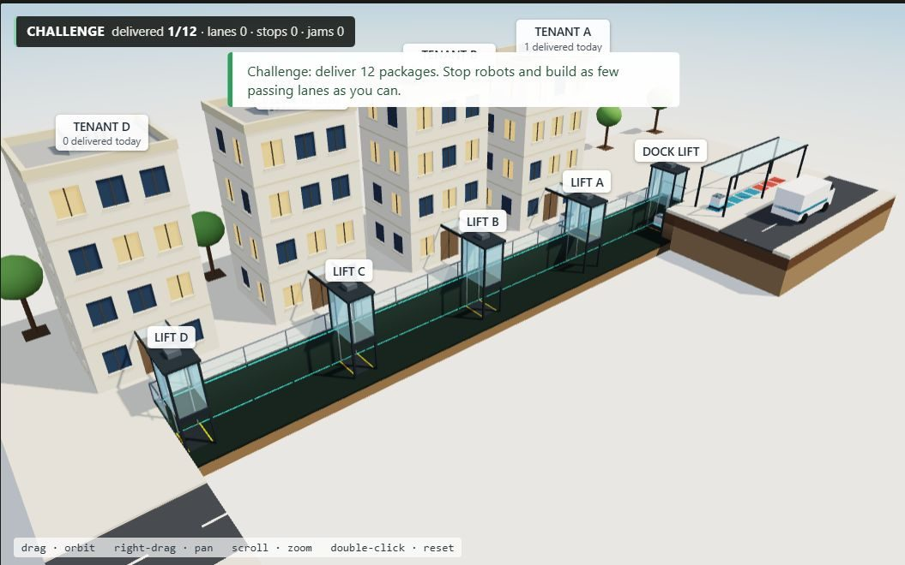
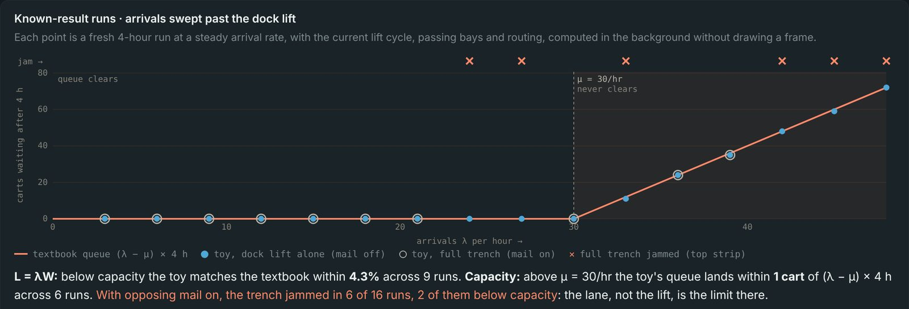
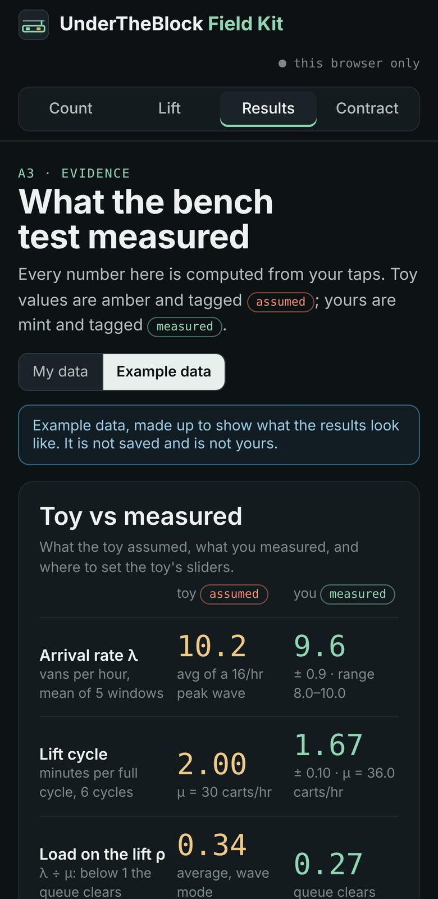
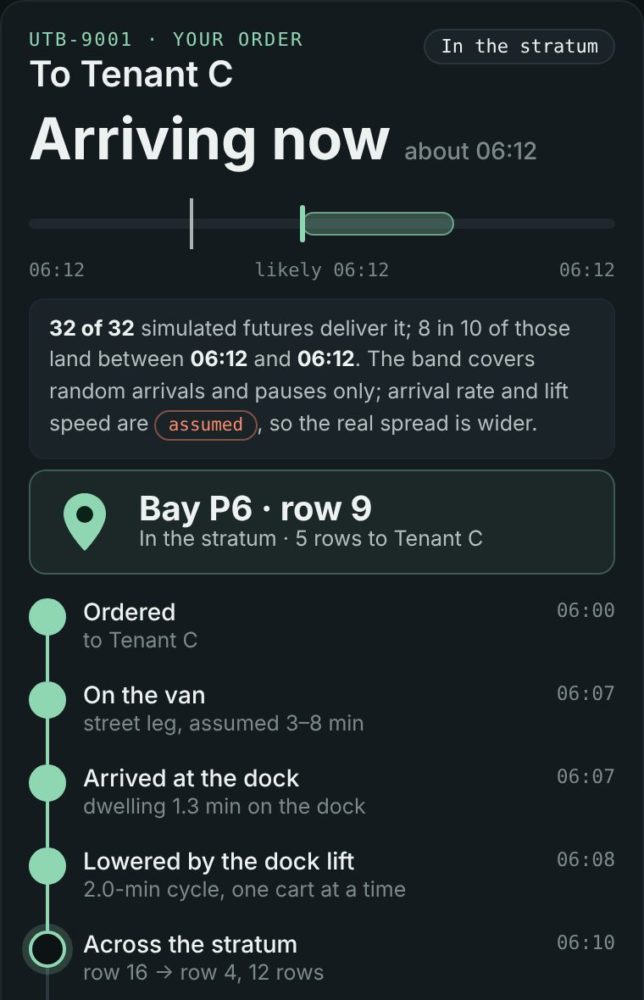

Underthe Block
One loading dock, one lane one storey under the plaza, and small robots carrying every delivery to four buildings.

The stratum
Deliveries stop clogging the curb. A van unloads at a dock, one lift lowers each cart below the plaza, and robots carry it along a single 1.7 m lane to the building it is for.
What the toy found
A2 · Disposition Playground. A live model where every cart is one object for its whole trip, and the configuration grows out of what the carts refuse to do.
One narrow service trench became a network of compressed rows and passing pockets.
As more carts entered the system, the toy showed where a continuous trench could no longer carry traffic both ways. Carts meeting head-on with nowhere to pass deadlocked. Passing pockets appeared where those conflicts happened, giving the lane a rhythm of compression and release rather than one uniform corridor.
Neither of us would have drawn the passing-bay network. We would have drawn a continuous corridor and assumed the carts could sort it out. The toy made the conflict visible and turned failure into a spatial requirement.
The toy can discover a configuration within its system, but it cannot question the system itself.A2 note · quoted in the A3 brief

The instrument
A3 asks for a truer toy, not a bigger one: one claim, one test, one correction. Ground the one number the verdict depends on, and let the toy predict before it is tested.
Contract
Claim, what the toy cannot know, and the test that would prove it wrong. Every rule and number listed in a ledger.
draftedKnown result
The toy reproduces Little's law, L = λW, and the textbook queue above capacity.
reproducedBench test
Count arrivals at a real dock and time a freight elevator, five repeats each.
field kit readyCorrect, predict
Swap in measured numbers, lock a prediction, then test it. A miss is a result.
nextEvidence panel
Measured, sourced and assumed on screen, readable by a stranger.
nextFor any system carts enter and leave, the average number inside equals the arrival rate times the average time each one spends inside.
The toy now measures both sides live. When arrivals pass what the dock lift can take, ρ = λ/μ ≥ 1, the queue should never clear and should grow by λ − μ every hour. It does.

Largest gap between the toy's L and λ × W below capacity, across 9 runs. The gap is carts still inside when a run stops.
Above μ = 30 per hour, the toy's queue after 4 hours lands on (λ − μ) × 4 h in all 6 runs.
Runs where the trench jammed with mail running the other way, 2 of them below the lift's capacity. There the lane, not the lift, is the limit.
Three instruments
Each runs in a browser, on a laptop or a phone. They share one simulation: the same rows, passing bays, dock lift and jam rules.
Under the Block
The live 3D model in section, the routing proposer that the model accepts or refuses, and the Little's law panel.
Open the model →
Field Kit
A phone app for the dock and the elevator: tap arrivals and departures, time lift cycles, and get λ, W, L and μ against the toy, with the A3 checklist.
Open the field kit →
Track
Follow one package from van to tenant on a map of the block, with its place pinned to the bay or row and an honest ETA band.
Open the tracker →
Each ETA comes from running the simulation forward 32 times with fresh randomness. The app shows the likely time and the range that holds 8 in 10 of the futures, says how many futures jam instead, and promises nothing when every future jams.
Checked across three simulated days, 54 of 59 packages arrived inside their 80% window: slightly cautious, the honest side to be wrong on. The window covers randomness inside the model only, so with assumed inputs the real spread is wider.

What the stratum can carry
Ten random 8-hour shifts per setting, at rising arrival rates. Ranges run from "no cart ever spills onto the curb" to "the dock queue stays bounded". Days are 16 operating hours, assumed.
As designed: a traffic controller and passing bays at all 8 choke points. About 2,900–14,000 parcels at an assumed 10–30 a cart.
One lift lowering a cart every 2 minutes. The lane alone carries about 300 an hour in one direction.
Office raised floors are 41–70 mm deep, data-centre floors 0.8–1.0 m. The robot stays in the stratum and the tenant lifts.
Robots follow each other row by row without jamming. Head-on traffic needs bays at every choke point plus the controller.
What the model cannot know
Tenant lifts are drawn but not simulated. There is no maintenance, charging, turning radius or structure. The traffic controller is a planner rule, not physics. And until the bench test, the numbers below are guesses.
| Number the verdict depends on | Value | Tag | How it gets grounded |
|---|---|---|---|
| Arrivals at the dock | 16 carts/hr peak | assumed | Field Kit counts at the Jester mail center, five 30-minute windows |
| Dock lift cycle | 2 min | assumed | Field Kit timing of a campus freight elevator, five cycles |
| Time to cross one 2.3 m row | 0.15 min | assumed | Robot spec sheet |
| Outgoing mail per building | 3 carts/hr | assumed | Mail-room pickup counts |
| Raised-floor depth | 41–70 mm · 0.8–1.0 m | sourced | Wikipedia, Raised floor |
| Little's law in the toy | within 4.3% | reproduced | Move 2, shown in the model |